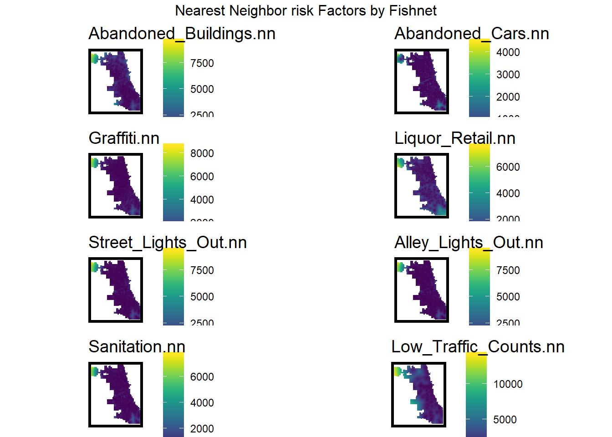
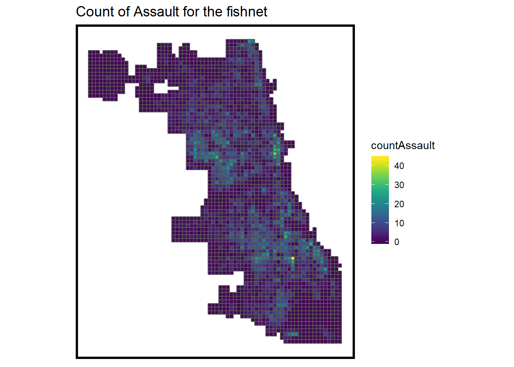
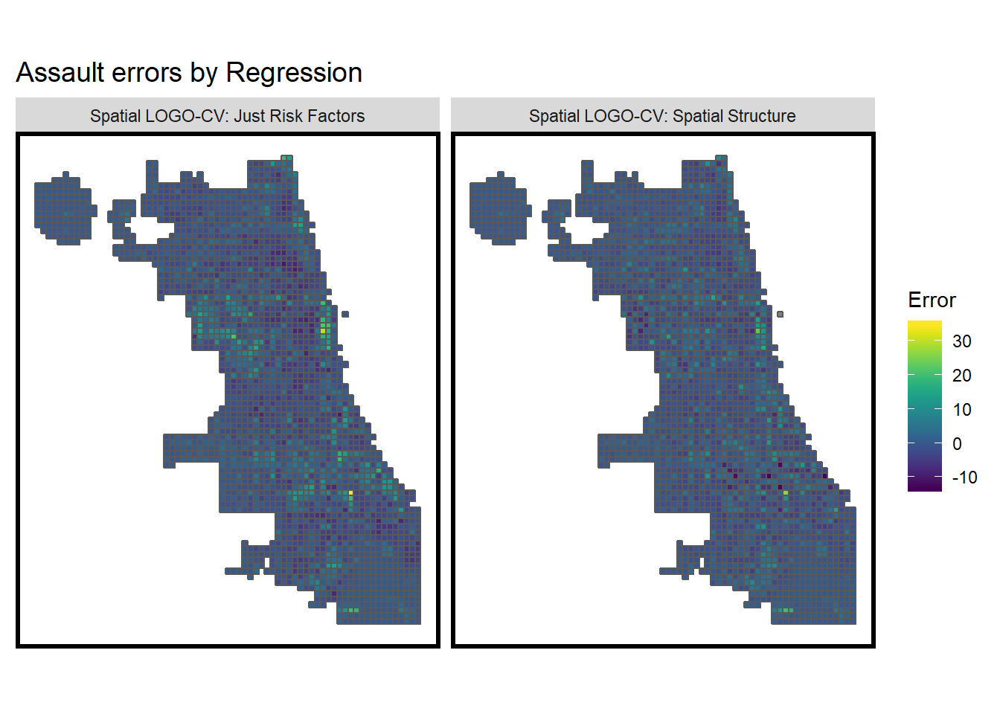

Assignment 10: Predictive Modeling & Geospatial Risk Models - Predicting Assault in Chicago
Sara Mattio
11/8/2019
Introduction
Spatial risk models have become more utilized in the public sector to improve current business practices for predicting outcomes. In the realm of Public Safety, the predicted occurrence of aggravated assault crimes is generally based on ‘keneral density’ modeling, where crimes are predicted to be located in areas with a high density of recorded aggravated assault crimes. The spatial risk model developed below utilizes aggravated assault crimes from Chicago’s Open Data portal, along with eight risk factors also derived from the Open Data Portal. The goal of this markdown is to analyze the accuracy and generalizability of the model, while also determining if the model includes racial fairness.
Mapping Aggravated Assault in Chicago
The map below shows the location of reported cases of assault in Chicago from 2017. In this model, it is likely that a reporting bias may exist in low-income, non-white areas where there is a higher level of mistrust of public safety officers. Therefore, it is more likely that cases of assault where reported in middle and higher income neighborhoods where residents are majority white.
ggplot() +
geom_sf(data = chicagoBoundary) +
geom_sf(data = assault, colour="red", size=0.1, show.legend = "point") +
labs(title= "Aggravated Assault, Chicago - 2017") +
mapTheme()
To begin developing a prediction model, assault features are mapped with a fishnet to create a count of aggravated assault by fishnet.
crime_net <-
assault %>%
dplyr::select() %>%
mutate(countAssault = 1) %>%
aggregate(., fishnet, sum) %>%
mutate(countAssault = ifelse(is.na(countAssault), 0, countAssault),
uniqueID = rownames(.),
cvID = sample(round(nrow(fishnet) / 24), size=nrow(fishnet), replace = TRUE))
#map results
ggplot() +
geom_sf(data = crime_net, aes(fill = countAssault)) +
scale_fill_viridis() +
labs(title = "Count of Assault for the fishnet") +
mapTheme()
Incorporating Risk Factors (Feature Engineering)
A series of eight risk factors were wrangled to determine if assault is more prevalent when exposed to these characteristics. The risk factors are mapped below.
#data wrangling
vars_net <-
rbind(abandonCars,streetLightsOut,alleyLightsOut, abandonBuildings,
liquorRetail, graffiti, sanitation, LowTrafficCounts) %>%
st_join(., fishnet, join=st_within) %>%
st_set_geometry(NULL) %>%
group_by(uniqueID, Legend) %>%
summarize(count = n()) %>%
full_join(fishnet) %>%
spread(Legend, count, fill=0) %>%
st_sf() %>%
dplyr::select(-`<NA>`) %>%
na.omit()## Joining, by = "uniqueID"#map features
vars_net.long <-
vars_net %>%
gather(Variable, value, -geometry, -uniqueID)
vars <- unique(vars_net.long$Variable)
mapList <- list()
for(i in vars){
mapList[[i]] <-
ggplot() +
geom_sf(data = filter(vars_net.long, Variable == i), aes(fill=value), colour=NA) +
scale_fill_viridis(name="") +
labs(title=i) +
mapTheme()}
do.call(grid.arrange,c(mapList, ncol =2, top = "Risk Factors by Fishnet"))
Local Moran’s I
To better understand the spatial structure of aggravated assault, a Local Moran’s I was utilized to visualize and test the correlation of countAssault.
final_net.localMorans <-
cbind(
as.data.frame(localmoran(final_net$countAssault, final_net.weights)),
as.data.frame(final_net, NULL)) %>%
st_sf() %>%
dplyr::select(Assault_Count = countAssault,
Local_Morans_I = Ii,
P_Value = `Pr(z > 0)`) %>%
mutate(Significant_Hotspots = ifelse(P_Value <= 0.05, 1, 0)) %>%
gather(Variable, Value, -geometry)## Warning in lag.listw(listw, z, zero.policy = zero.policy, NAOK = NAOK): NAs in
## lagged valuesvars <- unique(final_net.localMorans$Variable)
varList <- list()
for(i in vars){
varList[[i]] <-
ggplot() +
geom_sf(data = filter(final_net.localMorans, Variable == i), aes(fill = Value), colour=NA) +
scale_fill_viridis(name="") +
labs(title=i) +
mapTheme()}
do.call(grid.arrange,c(varList, ncol = 4, top = "Local Morans I statistics, Aggravated Assault"))
Testing the Correlation of Features to Assault
The charts below examine the correlation between each risk factor and the outcome, assault. Significant risk factors include abandoned buildings, alley light outages, and abandoned cars. In each of these factors, an increase in the risk factor results in an increase in assault and the futher the distance from these risk factors, the less occurrences of assault.
ggplot(correlation.long, aes(Value, countAssault)) +
geom_point(size = 0.1) +
geom_text(data = correlation.cor, aes(label = paste("r =", round(correlation, 2))),
x=-Inf, y=Inf, vjust = 1, hjust = -.1) +
geom_smooth(method = "lm", se = FALSE, colour = "#a2d7d8") +
facet_wrap(~Variable, ncol = 2, scales = "free") +
labs(title = "Assault count as a function of risk factors")## Warning: Removed 1 rows containing non-finite values (stat_smooth).## Warning: Removed 1 rows containing missing values (geom_point).
Poisson Regression Model and Results
The bar chart below shows the distribution of assault by grid cell. Based on this distribution, it is clear that the Poisson Regression model is best suited for this case.
ggplot(final_net, aes(countAssault)) +
geom_histogram(binwidth = 1) +
labs(title = "Distribution of assault by grid cell")The set of maps below shows mapped prediction errors by random k-fold and spatial cross validation. When comparing the two validation models, the lack of the spatial components seems to be resulting in increased errors.
filter(reg.summary, Regression == "Spatial LOGO-CV: Just Risk Factors" |
Regression == "Spatial LOGO-CV: Spatial Structure") %>%
ggplot() +
geom_sf(aes(fill = Error)) +
facet_wrap(~Regression) +
scale_fill_viridis() +
labs(title = "Assault errors by Regression") +
mapTheme()The Mean Absolute Error (MAE) for both cross-validation models is provided in the table below. The most significant takeaway from this table is the noticable difference in the absolute error – incorporating spatial structure reduces the MAE.
st_set_geometry(reg.summary, NULL) %>%
group_by(Regression) %>%
summarize(MAE = round(mean(abs(Prediction - countAssault), na.rm = T),2),
SD_MAE = round(sd(abs(Prediction - countAssault), na.rm = T),2)) %>%
kable(caption = "MAE by regression") %>%
kable_styling("striped", full_width = F) %>%
row_spec(2, color = "black", background = "#FDE725FF") %>%
row_spec(4, color = "black", background = "#FDE725FF") | Regression | MAE | SD_MAE |
|---|---|---|
| Random k-fold CV: Just Risk Factors | 2.58 | 2.96 |
| Random k-fold CV: Spatial Structure | 2.15 | 2.29 |
| Spatial LOGO-CV: Just Risk Factors | 2.62 | 3.02 |
| Spatial LOGO-CV: Spatial Structure | 2.17 | 2.33 |
Neighborhood Context
When incorporating race data by Census Tract, the table below shoes that both models are over-predicting in majority non-white neighborhoods and underpredicting in majority white neighborhoods. It should also be noted that a much smaller gap exists between the two categories in the spatial structure model.
st_set_geometry(final_reg.tracts, NULL) %>%
group_by(Regression, raceContext) %>%
summarize(mean.Error = mean(Error, na.rm = T)) %>%
spread(raceContext, mean.Error) %>%
kable(caption = "Mean Error by neighborhood racial context") %>%
kable_styling("striped", full_width = F) | Regression | Majority_Non_White | Majority_White |
|---|---|---|
| Spatial LOGO-CV: Just Risk Factors | 0.6123199 | -0.6229433 |
| Spatial LOGO-CV: Spatial Structure | 0.1155002 | -0.1068955 |
Spatial Risk Model vs. Current Business Practices
In a well-fitted model, the areas of high risk will be targeted to places with a high density of points. In the risk predictions map below, this seems to be the case. Compared to the kernal density model primarily used in business practices, the spatial risk predictions are better targeted.
rbind(assault_KDE_sf, assault_risk_sf) %>%
gather(Variable, Value, -label, -Risk_Category, -geometry) %>%
ggplot() +
geom_sf(aes(fill = Risk_Category), colour = NA) +
geom_sf(data = sample_n(assault, 1500), size = .1, colour = "black") +
facet_wrap(~label, ) +
scale_fill_viridis(discrete = TRUE) +
labs(title="Comparison of Kernel Density and Risk Predictions",
subtitle="Relative to test set points (in black)") +
mapTheme()
To further compare the two models, the rate of assault points by risk category is calculated and displayed in the chart below. The risk predictions in the highest risk cateogry should be greater than that of the kernal density model. In this spatial risk model, such is the case.
rbind(assault_KDE_sf, assault_risk_sf) %>%
st_set_geometry(NULL) %>%
gather(Variable, Value, -label, -Risk_Category) %>%
group_by(label, Risk_Category) %>%
summarize(countAssault = sum(Value)) %>%
ungroup() %>%
group_by(label) %>%
mutate(Rate_of_test_set_crimes = countAssault / sum(countAssault)) %>%
ggplot(aes(Risk_Category,Rate_of_test_set_crimes)) +
geom_bar(aes(fill=label), position="dodge", stat="identity") +
scale_fill_viridis(discrete = TRUE)
Conclusion
The goal of this spatial risk model was to predict aggravated assault in Chicago in a way that is both accurate and generalizable. When developing the model, the primary concern was that reporting bias would skew the results and only show results in areas where people have a higher propensity to report crime. While selection bias may be difficult to avoid with the data utilized, this model is more precise in locating predicted aggravated assault than current business practices.
In terms of generalizability, the model is able to generalize relatively well across neighborhoods. When race data is incorporated into the results, the spatial risk model is significantly fairer than a model developed without a spatial component. This report concludes that this spatial risk model is recommended to be put into production.